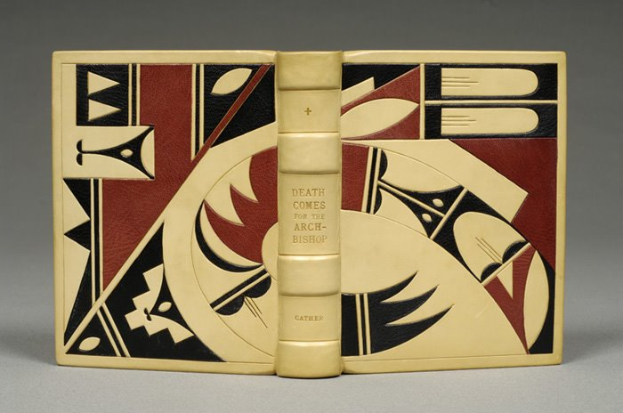
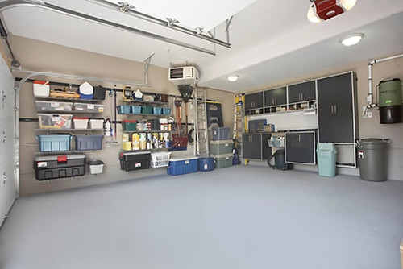
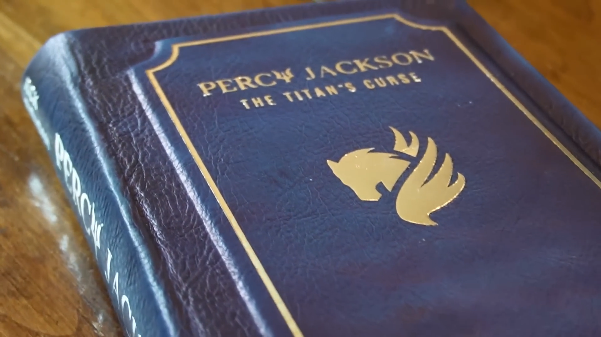
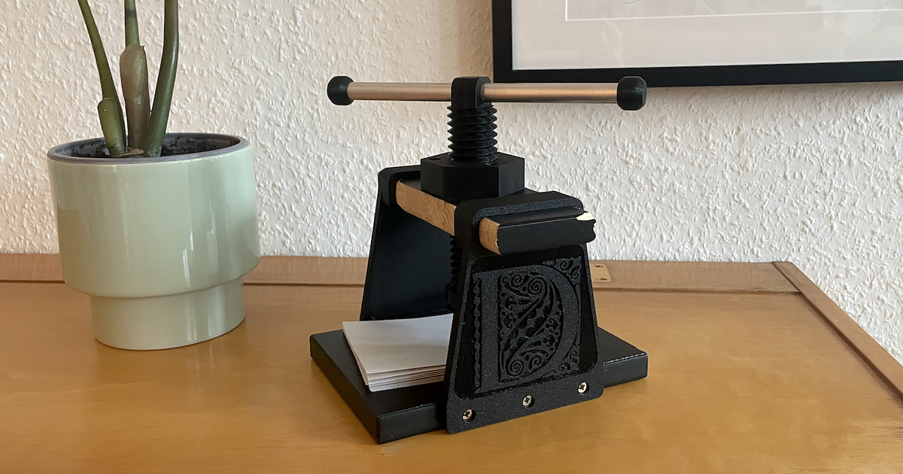
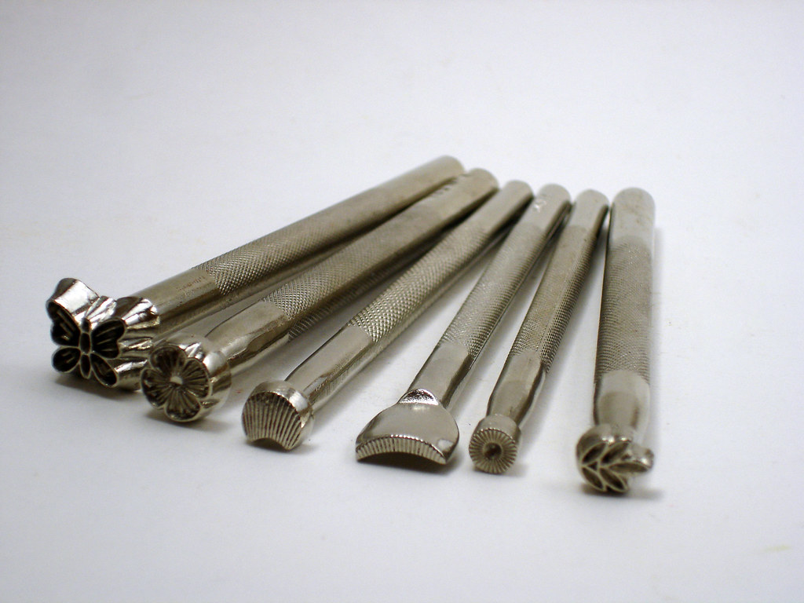

Home
Hello! Welcome to my book binding page.

I like to rebind books I own and bind fanfiction in to real, leatherbound books.
About Me
My name is Mason Kuykendall, and I love to bind books. I find it very peaceful and cathartic.
I am currently a CS student at UNC Charlotte and work at Ingles Markets. In my off time I live to do creative hobbies such as book binding, leather working, and stone carving.
Best Times
| Day | Time |
|---|---|
| Sunday | 5:00 PM - 9:00 PM |
| Monday | 5:00 PM - 9:00 PM |
| Tuesday | 10:00 AM - 7:00 PM |
| Wednesday | 5:00 PM - 9:00 PM |
| Thursday | 5:00 PM - 9:00 PM |
| Friday | 7:00 PM - 9:00 PM |
I am usually free after work. On tuesday I am free all day and on saturday I am never free.
Where I Do It
So where do I do my book binding hobby? Well, here in my garage of course!

It is big enough to house all the tools I use and have my book press.
Why I Do It
Why do I do book binding? I do it because I find it very relaxing and rewarding. I also like to have physical copies of my favorite fanfiction. I mean just look at this Percy Jackson rebinding from Jess Less:

Just seeing awesome rebindings like these just make me wait to come home from work and work on a book.
How I Do It


Some of the tools I use for book binding are my book press, which I use to hold the pages together while the glue dries, and my leather stamps, which I use to create decorative patterns on the book covers. I also use a needle, twine, and glue to create the spine of the book
AI Prompts
Prompt: "how to make sections in html on appear one at a time: how to make the sections section right (Bing -> Copilot)"
It showed me in CSS how to detect wether a link has been clicked on and showed me how to make the sections appear one at a time.